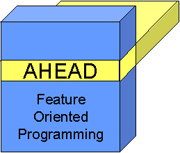

|
|
AHEAD Tool Suite |

The AHEAD Tool Suite (ATS) is a set of tools that support Feature Oriented Programming (FOP). The goal of FOP is to raise the level of specifications of systems beyond source code to that of compositional programming. Modularized units implement features that many programs within a family of programs can share. A specific member of this program family is defined by a unique composition of features. FOP methodology requires the use of extended Java languages (to express the key ideas of FOP), and ATS provides tools for:
- step-wise refinement and compositional programming
- metaprogramming
- extending programming languages (e.g., Java)
There are two papers in PDF format that you should read before reading these documents:
|
The theory behind FOP and ATS |
|
|
Illustrative examples of FOP and ATS tools |
What's New? |
In this release, the following additional "features" have been added:
- Refactoring Java applications in previous versions of AHEAD was difficult, because
"super" had to be replaced with corresponding "Super()" calls. No
longer. "super" can be used as in normal Java programs.
"Super()" is generally used to express refinements, although it can still be used
to mean "super". So refactoring legacy Java applications is mostly
partitioning source code into features, changing "package" declarations to
"layer" declarations, and when refinements are needed, using
"Super()". Click
here for more details.
- Hierarchical packages were not handled well in previous versions of AHEAD, in
particular, nested package names and references were not handled properly. To reference
the name of a generated package within Jak code, you should use the identifier
"$pack", which when translated to Java, will be replaced with the name of the
equation (i.e., the name of the package) that is synthesized. Click here for more details.
- guidsl has been improved with the addition of an analysis that checks the consistency
of the feature models.
Step-Wise Refinement and Compositional Programming |
The place to start with these documents is:
which gives a brief overview of AHEAD tools and the extensions to Java on which AHEAD relies. The AHEAD tools that are documented in these notes include:
|
a tool for composing features |
|
|
a tool for composing .jak files |
|
|
another tool for composing .jak files |
|
|
a tool for uncomposing .jak files |
|
|
translates .jak files to .java files |
|
|
a tool to format Java and extended Java files |
|
|
a feature model specification tool |
|
|
utility used by ModelExplorer |
|
|
a JavaDoc-like tool for .jak files |
|
|
a tool to explore feature directories and compositions |
|
|
byte code composition tools |
|
|
a tool for composing XML files |
|
|
a tool for verifying safe composition of the product-line |
|
|
a tool for verifying orthogonality of the multidimensional product-line model |
Links to legacy tools are here.
Please note: All AHEAD tools are invoked as shell scripts or bat files, such as:
> mixin <input>
where mixin is the name of an AHEAD tool. All AHEAD tools can be called as a normal Java application by invoking the Main class, provided their jar file is on the classpath:
> java mixin.Main <input>
Metaprogramming |
Metaprograms are programs that generate other programs. Preliminary documents that describe the metaprogramming facilities in Jak (the extended Java language in which AHEAD is written) are listed below. These documents will eventually be replaced with a more complete set that explains the Bali compiler tools and how metaprogramming constructs integrate.
- Abstract Syntax Trees (ASTs) in AHEAD
- AST code constructors and escapes
- AST Cursors
- Generation Scoping
You might find it useful to read the JTS_Theory paper as background to our take on metaprogramming.
Extending Programming Languages |
Just as software applications can be extended using step-wise refinement, so too can languages. Virtually all AHEAD tools are written in an extended version of Java (called Jak -- short for Jakarta). To understand the design paradigm that we have used in building extended Java languages, read the following paper:
Given this background, you'll be ready to understand the following documents for writing and extending translators:
You will be using a set of tools in building translators. Documents on these tools are (in the process of being written):
|
a tool for composing grammars |
|
|
a tool for generating inheritance hierarchies from grammar files |
|
|
a tool that invokes bali2jak on an equation |
|
|
a tool for generating a javacc parser from a grammar file |
|
|
a tool for generating feature/layer templates |
Legacy Tools |
There are tools that were built for the AHEAD project that, for a variety of reasons, are either not supported or used. They are still available, and so too are their documents:
|
xml file composition tool |
|
|
design rule checker |
|
|
an origami matrix browser |
|
|
unsupported C++ tools |
Copyright © Software Systems Generator Research Group. All rights
reserved.
Revised: July 18, 2007.